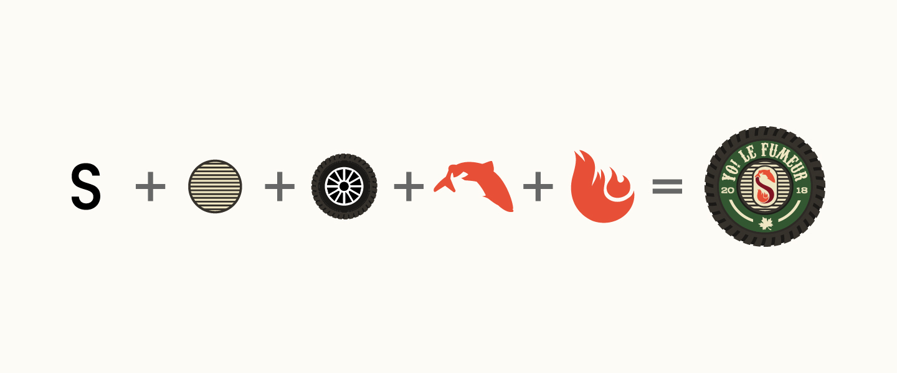
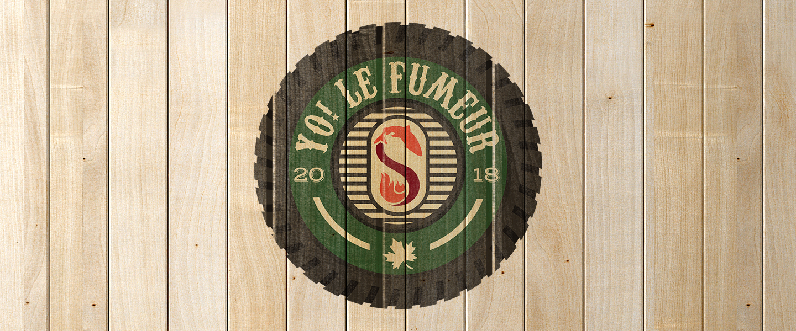
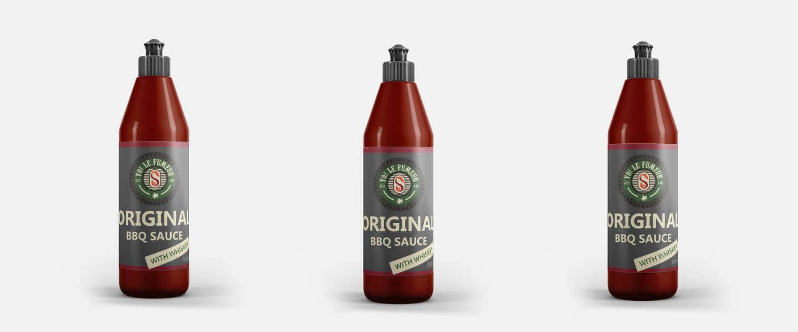
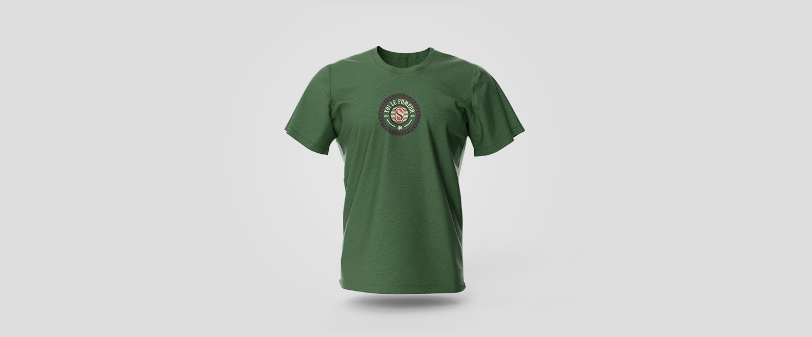
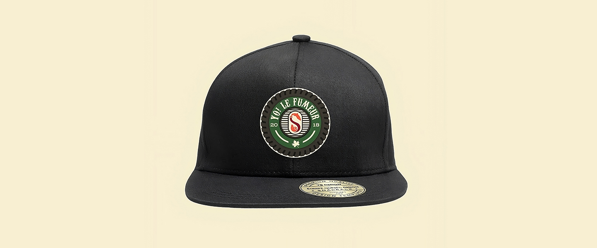
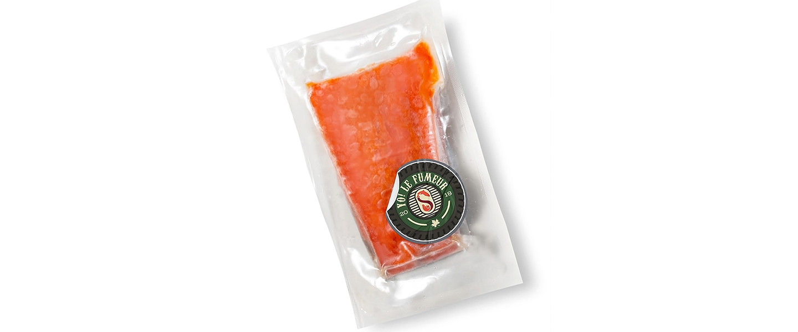
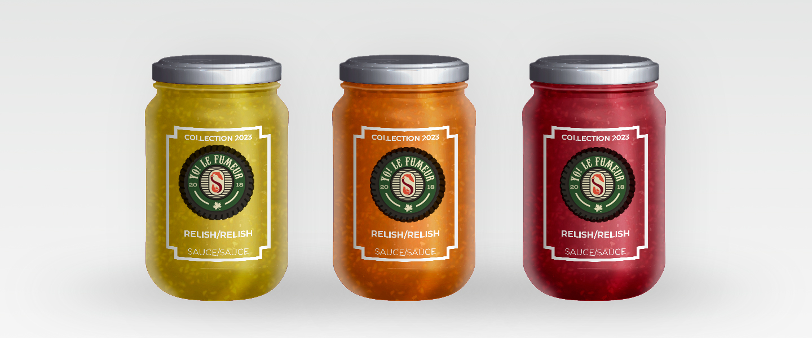
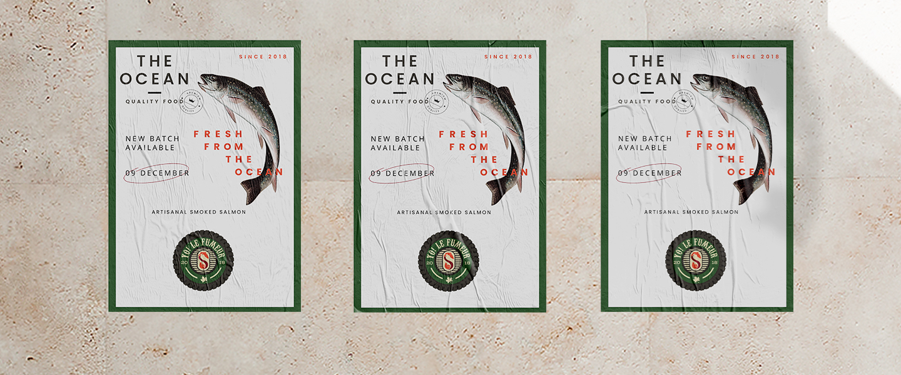

YO! LE FUMEUR
Branding
Description:
Crafting a Symbolic Journey. In the creation of this logo, I crafted a badge within the embrace of a 150-ton truck wheel a nod to the mining town of Fermont, the artisan’s origin. Concealed within this emblem is a story of smoke and salmon a tribute to the town’s essence. The shape itself cleverly forms an ‘S,’ entwining the smoke’s essence with the salmon’s spirit. As you explore further, the BBQ grill emerges, a testament to the artistry’s core. The presence of the maple leaf speaks volumes, for it represents the very wood that adds character to smoked salmon. This logo encapsulates a journey, weaving elements of origin, craft, and tradition into a seamless and flavorful tale.







